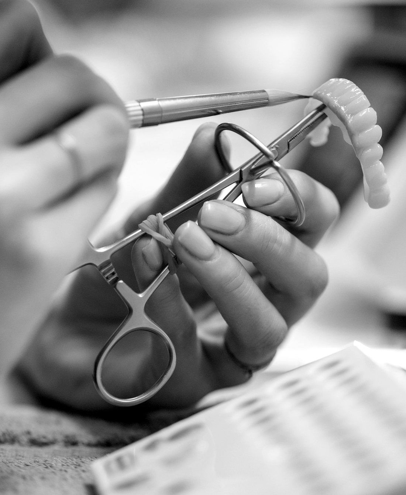

Fusiones y adquisiciones · España
Fusiones y adquisiciones de laboratorios dentales.
Asesoramos en la venta, la adquisición y la transición accionarial de laboratorios de prótesis dental en España, desde el laboratorio tradicional hasta el que trabaja con escáner intraoral, diseño CAD/CAM y fresado propio.

Servicios
Venta, transición y adquisición, con un único foco sectorial.
- 01
Asesoramiento en venta
Preparación del laboratorio, búsqueda de compradores y apoyo en la negociación de una venta total o parcial.
- 02
Transiciones accionariales
Análisis de alternativas para la sucesión del propietario o la entrada de un socio.
- 03
Búsqueda de contrapartes
Identificación de compradores e inversores en España y Europa, y análisis de su encaje.
- 04
Asesoramiento en adquisiciones
Búsqueda y evaluación de laboratorios para grupos del sector e inversores.

Sector
Laboratorios de prótesis dental a medida.
Nos centramos en laboratorios que fabrican prótesis fija, removible e implantosoportada para clínicas dentales. Analizamos cada oportunidad según su mezcla de productos, su capacidad digital, su cartera de clínicas y su encaje con compradores estratégicos y financieros.
Equipo
Las personas que trabajan en cada operación.
Un equipo con base en Madrid que atiende en español e inglés y trabaja directamente con cada cliente.
¿Valora vender su laboratorio, incorporar un socio o adquirir otro laboratorio?
Una primera conversación es reservada y no implica ningún compromiso.